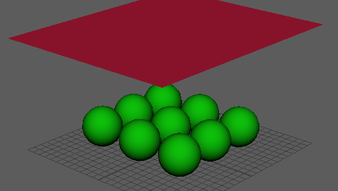

您可以从 Maya 多边形网格创建 Bullet 柔体。创建柔体时还将创建新的网格节点，其名称是原始多边形对象名加上后缀 Solved。
此对象是 Bullet 柔体模拟变形的网格。尽管可以使用任何多边形网格，但就布料柔体而言，多边形平面效果较好。

创建柔体
- 选择要用作柔体的多边形网格。
- 选择“Bullet > 创建柔体”(Bullet > Create Soft Body)。出现“创建柔体选项”(Create Soft Body Options)窗口。
- 配置您的柔体选项并单击“应用”(Apply)和“关闭”(Close)。
有关配置柔体选项的信息，请参见柔体特性；有关柔体工作流的示例，请参见使用 Bullet 柔体创建布料模拟。